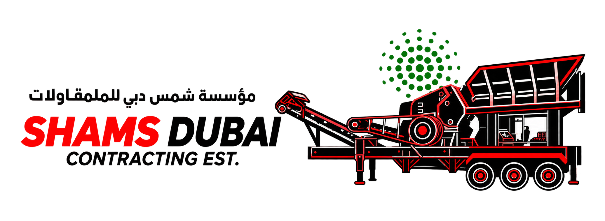

مؤسسة شمس دبي للمقاولاتSHAMS DUBAI CONTRACTING EST.

كارت التشغيل الشهري للمعداتMONTHLY EQUIPMENT OPERATION CARD
المعدة / رقمهاEquipment / ID
الشهر / السنةMonth / Year
اسم المالكOwner name
المشروع / الموقعProject / Site
اسم العاملOperator name
الورديةShift□ نهار / Day □ ليل / Night
رقم الكارتCARD No. — office use
اسم المشرفSupervisor name
اكتب الساعات العادية في «ساعات التشغيل»، والإضافي منفصلًا. لا تحسب نفس الساعة مرتين.Enter regular hours under Operating hours and overtime separately. Do not count hours twice.
| اليومDay | ساعات التشغيلOperating hours | الوقت الإضافيOvertime hours | التوقيعSignature | ملاحظة / سبب التوقفNote / Stoppage reason |
|---|---|---|---|---|
| 01 | ||||
| 02 | ||||
| 03 | ||||
| 04 | ||||
| 05 | ||||
| 06 | ||||
| 07 | ||||
| 08 | ||||
| 09 | ||||
| 10 | ||||
| 11 | ||||
| 12 | ||||
| 13 | ||||
| 14 | ||||
| 15 | ||||
| 16 |
| اليومDay | ساعات التشغيلOperating hours | الوقت الإضافيOvertime hours | التوقيعSignature | ملاحظة / سبب التوقفNote / Stoppage reason |
|---|---|---|---|---|
| 17 | ||||
| 18 | ||||
| 19 | ||||
| 20 | ||||
| 21 | ||||
| 22 | ||||
| 23 | ||||
| 24 | ||||
| 25 | ||||
| 26 | ||||
| 27 | ||||
| 28 | ||||
| 29 | ||||
| 30 | ||||
| 31 | ||||
| — | ||||
| إجمالي ساعات التشغيلTotal operating hours | إجمالي الوقت الإضافيTotal overtime hours | إجمالي الساعاتTotal hours (regular + overtime) |
|---|
لو مفيش تشغيل، اكتب 0 والسبب. اشطب الأيام غير الموجودة في الشهر.If no work: enter 0 and the reason. Cross out days outside the month.
توقيع العاملOperator signature
توقيع المشرفSupervisor signature